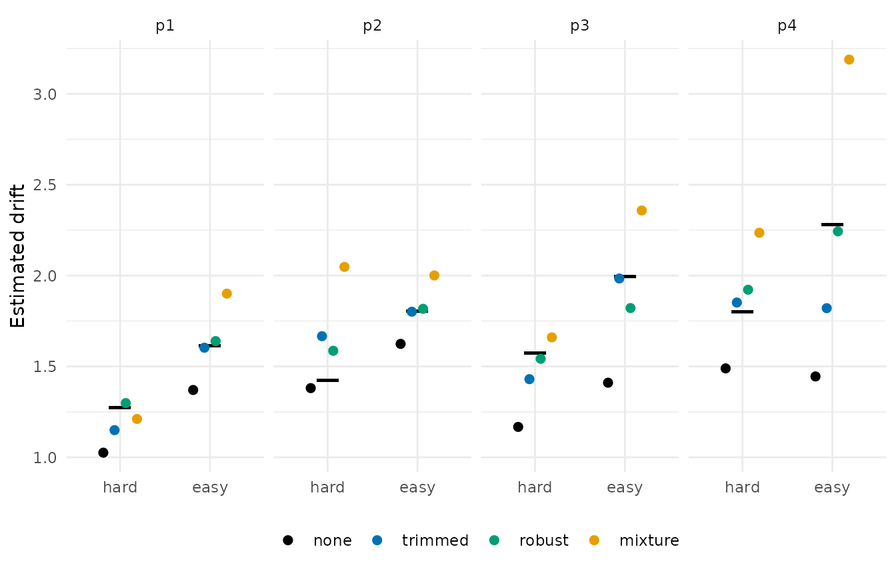

Aggregation: from surviving trials to parameters
Source:vignettes/articles/aggregation.Rmd
aggregation.RmdScreening decides which trials survive. Aggregation decides what the
survivors are summarised as, and the two fail differently, which is why
rtprep keeps them apart. The same trials summarised three
ways give three different sets of summary statistics, and the parameters
follow from those. This article walks through
rt_summary()’s three methods and its weights, the accuracy
correction that goes with the mixture route, the ez_ddm()
inversion and its scaling convention, and then puts four routes side by
side on rt_example, whose cells carry the drift they were
generated from.
What rt_summary() returns
The EZ-diffusion equations need three things per cell: the mean
response time, its variance, and the proportion correct.
rt_summary() returns the first two and the counts behind
the third, one row per call, so it fits inside reframe()
the way rt_screen() fits inside mutate():
p3_hard <- rt_example |>
filter(id == "p3", condition == "hard")
rt_summary(p3_hard$rt, p3_hard$response)
#> mean_rt var_rt n_upper n_trials contaminant_prop
#> 1 0.6412949 0.1046185 84 100 NAcontaminant_prop is NA for every method but
"mixture", which is the only one that estimates it.
version = "4par" summarises the two response boundaries
separately, for the version of the model that lets the starting point
sit off centre:
rt_summary(p3_hard$rt, p3_hard$response, version = "4par")
#> mean_rt_upper mean_rt_lower var_rt_upper var_rt_lower n_upper n_trials
#> 1 0.6292822 0.7043615 0.06340244 0.3346047 84 100
#> contaminant_prop_upper contaminant_prop_lower
#> 1 NA NAOne caveat carries over from bmm. A trial whose response
is missing belongs to neither boundary and is left out of
n_upper, but it still counts towards n_trials,
so the ratio understates accuracy when responses are missing. Drop those
trials before aggregating if that matters.
Robust moments
method = "robust" replaces the mean with the median and
the variance with a robust spread: the interquartile range divided by
1.349, squared, or the median absolute deviation. This is robustness at
the level of the statistic, after Chávez De la Peña et al. (2026): no
trial is removed, and a contaminant in the tail moves the median very
little and the interquartile range not at all.
moments <- bind_rows(
simple = rt_summary(p3_hard$rt, p3_hard$response),
robust_iqr = rt_summary(p3_hard$rt, p3_hard$response, method = "robust"),
robust_mad = rt_summary(
p3_hard$rt, p3_hard$response, method = "robust", robust_scale = "mad"
),
.id = "method"
)
moments |>
select(method, mean_rt, var_rt)
#> method mean_rt var_rt
#> 1 simple 0.6412949 0.10461851
#> 2 robust_iqr 0.5620000 0.03434441
#> 3 robust_mad 0.5620000 0.03714794The median sits well below the mean, as it does for any right-skewed distribution, and the IQR-based robust variance is 33% of the sample variance. Those are not corrections for contamination; they are different statistics, and they feed the same equations. The last section puts the four routes side by side.
Mixture moments
method = "mixture" fits the same contaminant mixture
rule_mixture() fits, then reads the mean and variance off
the fitted core rather than off the data. A trial the uniform component
owns contributes nothing to the moments, and the estimated contaminant
proportion comes back alongside them. This is the summary-level version
of modelling the contaminant instead of deleting it:
bind_rows(lapply(c("exgaussian", "lognormal", "invgaussian"), function(core) {
rt_summary(
p3_hard$rt, p3_hard$response, method = "mixture", distribution = core
) |>
mutate(distribution = core, .before = 1)
})) |>
select(distribution, mean_rt, var_rt, contaminant_prop)
#> distribution mean_rt var_rt contaminant_prop
#> 1 exgaussian 0.6182632 0.06133313 0.01744821
#> 2 lognormal 0.6076591 0.04476575 0.02722565
#> 3 invgaussian 0.6092693 0.04484182 0.02756894The ... arguments go to the fit as in
rule_mixture(), with the same defaults, including
maxit = 500 where bmm::ezdm_summary_stats()
uses 100. When the fit fails the moments fall back to the robust ones
with a warning, as in bmm. That differs from
rt_screen(), where the analogous failure keeps every trial,
and the difference is deliberate: a screen that cannot be evaluated
should remove nothing, but a summary still has to return a number.
rt_summary(p3_hard$rt, p3_hard$response, method = "mixture", maxit = 2)
#> Warning: The mixture fit did not converge; using robust moments instead.
#> mean_rt var_rt n_upper n_trials contaminant_prop
#> 1 0.562 0.03434441 84 100 NAWeights: the other way of not letting contaminants count
The mixture screen’s .prob can go into
rt_summary() as a weight vector instead of through a
threshold. Weighted moments let a doubtful trial contribute a little,
where mixture moments let a trial the uniform component owns contribute
nothing at all. The two are different models of the same doubt, and the
package refuses to combine them:
screened <- rt_screen(p3_hard$rt, rule_mixture("lognormal"))
rt_summary(p3_hard$rt, p3_hard$response, weights = screened$.prob)
#> mean_rt var_rt n_upper n_trials contaminant_prop
#> 1 0.6096456 0.05326504 84 100 NA
try(rt_summary(
p3_hard$rt, p3_hard$response, weights = screened$.prob, method = "mixture"
))
#> Error : 'weights' is defined for method = "simple" only. Both "robust" and "mixture" already have their own answer to contamination.The weighted variance uses the reliability-weight denominator \(\sum w - \sum w^2 / \sum w\), which reduces
to \(n - 1\) when the weights are
equal. Frequency weights would use \(\sum w -
1\) and are the wrong model, because .prob is a
probability, not a count. The same reasoning governs
min_trials: with weights, the comparison uses Kish’s
effective sample size \((\sum w)^2 / \sum
w^2\), so two unit weights among ninety-eight zeros count as two
trials, and the moments come back NA rather than as
noise:
two_trials <- c(rep(1, 2), rep(0, 98))
rt_summary(p3_hard$rt, p3_hard$response, weights = two_trials)
#> mean_rt var_rt n_upper n_trials contaminant_prop
#> 1 NA NA 84 100 NACorrecting the accuracy counts
Mixture moments take the contaminants out of the response times, but
the accuracy counts still include them. adjust_accuracy()
removes the estimated contaminants from the counts on the assumption
that they respond correctly at guess_rate. It is stochastic
by design: how many trials were contaminants, and how many of those
happened to be correct, are both binomial draws, and a point estimate
would understate that uncertainty. There is no set.seed()
inside the package, so the seed is yours:
set.seed(2026094)
adjust_accuracy(n_upper = 84, n_trials = 100, contaminant_prop = 0.10)
#> n_upper_adj n_trials_adj
#> 1 81 91
# NA or zero leaves the counts alone, so the column of a summary table
# drops in as it is
adjust_accuracy(n_upper = 84, n_trials = 100, contaminant_prop = NA)
#> n_upper_adj n_trials_adj
#> 1 84 100The function is vectorised over its rows and draws each row
independently, so it takes the columns of a summary table directly. For
a single row the two draws are made in the same order as
bmm::adjust_ezdm_accuracy(), and the two functions agree
draw for draw from the same seed.
ez_ddm() and the scaling constant
ez_ddm() is the closed-form inversion of Wagenmakers,
van der Maas, and Grasman (2007): mean, variance, and accuracy in;
drift, bound, and non-decision time out. It is exported so that the
whole chain from screening to parameters runs with rtprep
alone. The one argument that needs a sentence is s.
Wagenmakers et al. fix the diffusion coefficient at 0.1,
rtprep at 1, and the choice is a units convention rather
than a modelling one: drift and bound scale linearly with
s, non-decision time does not. Their worked example under
both conventions:
bind_rows(
wagenmakers = ez_ddm(
mean_rt = 0.723, var_rt = 0.112, accuracy = 0.802, n_trials = 100, s = 0.1
),
rtprep = ez_ddm(
mean_rt = 0.723, var_rt = 0.112, accuracy = 0.802, n_trials = 100
),
.id = "convention"
)
#> convention drift bound ndt edge_corrected
#> 1 wagenmakers 0.09993853 0.1399702 0.30003 FALSE
#> 2 rtprep 0.99938526 1.3997020 0.30003 FALSEA drift of 0.1 at s = 0.1 and a drift of 1 at
s = 1 describe the same process. Anything compared across
packages or papers has to be on one scale first; bmm uses 1
as well.
The equations divide by the logit of accuracy and break down at 0,
0.5, and 1. The published edge correction moves the offending value by
\(1 / (2n)\), and ez_ddm()
applies it silently, because a warning per cell would bury a simulation
run. Which rows it touched comes back as a column, so that it survives
subsetting and the dplyr verbs:
edges <- ez_ddm(
mean_rt = 0.5, var_rt = 0.02, accuracy = c(1, 0.5, 0.9), n_trials = 50
)
edges
#> drift bound ndt edge_corrected
#> 1 3.17897186 1.4454736 0.2771978 TRUE
#> 2 0.04805879 0.8324249 0.3267903 TRUE
#> 3 2.17111652 1.0120252 0.3135475 FALSEA cell at perfect accuracy gets a drift of 3.2 rather than infinity,
and edge_corrected is the flag to count in a results
table.
Four routes on rt_example
The routes above are alternatives to trimming, not additions to it.
Four pipelines on rt_example, each applied per cell: no
preprocessing, the ±2.5 SD trim with simple moments, robust moments on
all trials, and mixture moments on all trials with the accuracy counts
adjusted. Each ends in ez_ddm(), and the data carry the
drift each cell was generated from:
summarise_cells <- function(data, ...) {
data |>
reframe(rt_summary(rt, response, ...), .by = c(id, condition))
}
routes <- bind_rows(
none = summarise_cells(rt_example),
trimmed = rt_example |>
filter(rt_keep(rt, rule_sd(2.5), .by = list(id, condition))) |>
summarise_cells(),
robust = summarise_cells(rt_example, method = "robust"),
mixture = summarise_cells(
rt_example, method = "mixture", distribution = "lognormal"
),
.id = "route"
)
#> sd(2.5, mean, sd): dropped 26 of 800 trials (3.2%)
set.seed(2026094)
estimates <- routes |>
mutate(adjust_accuracy(n_upper, n_trials, contaminant_prop)) |>
mutate(ez_ddm(mean_rt, var_rt, n_upper_adj / n_trials_adj, n_trials_adj)) |>
left_join(
distinct(rt_example, id, condition, true_drift, contam_rate),
by = c("id", "condition")
) |>
mutate(
route = factor(route, levels = c("none", "trimmed", "robust", "mixture")),
error = drift - true_drift
)
estimates |>
summarise(
mean_error = mean(error),
mean_abs_error = mean(abs(error)),
.by = route
)
#> route mean_error mean_abs_error
#> 1 none -0.35712935 0.35712935
#> 2 trimmed -0.05790345 0.13121618
#> 3 robust 0.01250529 0.07332629
#> 4 mixture 0.35405639 0.37006909
ggplot(estimates, aes(x = condition, y = drift, colour = route)) +
geom_point(
aes(y = true_drift), shape = 95, size = 8, colour = "black"
) +
geom_point(position = position_dodge(width = 0.5), size = 2) +
scale_colour_manual(values = okabe_ito[c(8, 1, 3, 2)]) +
facet_wrap(~id, nrow = 1) +
labs(x = NULL, y = "Estimated drift", colour = NULL) +
theme_minimal() +
theme(legend.position = "bottom")
The table is each route’s mean signed and mean absolute error against
the generating drift over the eight cells; the figure puts the four
estimates of every cell next to its true drift. Two mechanical
differences separate the mixture route from the other three, and both
enter ez_ddm() in the same direction: its variance is read
off the fitted core rather than the sample, and
adjust_accuracy() raises the proportion correct; a smaller
variance and a higher accuracy both raise the drift.
Eight cells of 100 trials cannot rank four pipelines, and this page
does not try. What they show is that the same trials summarised four
ways give four drift estimates per cell, and the route
column is the whole difference between them. The ground-truth article carries the same
chain through on data matched to a task of your own, with a
perfect-exclusion oracle as the ceiling.
Differences from bmm
bmm::ezdm_summary_stats() returns the same columns under
the same names, and the two functions are compared over the full grid of
methods, versions, and cores in rtprep’s test suite. Three
defaults differ. rt_summary() defaults to
method = "simple" where bmm defaults to
"mixture", because a package about preprocessing choices
should not make one of them silently. The mixture route defaults to
maxit = 500 where bmm uses 100. And for
version = "4par" with mixture moments, the contaminant
bounds are resolved once on the pooled response times before the split,
so that the two halves are fitted against the same uniform component.
The correspondence between the two packages, function by function, is
the subject of its own article.